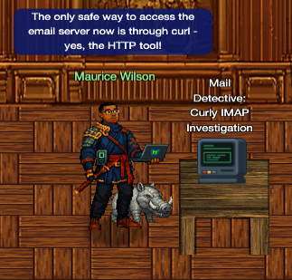
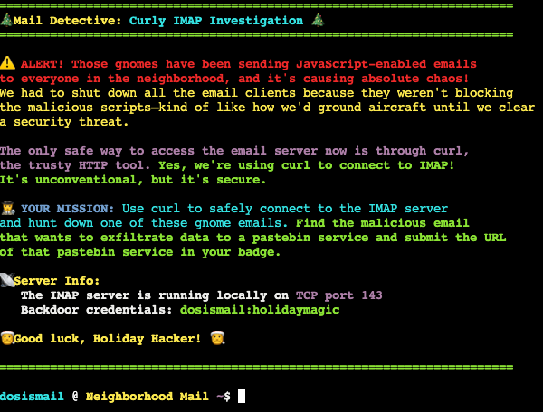

Mail Detective

With standard email clients grounded due to malicious scripts, I had to rely on the command line to save the day. This investigation involved manually interacting with an IMAP server using only curl to hunt down a suspicious data exfiltration link.
Challenge Overview
The challenge dropped me into a terminal with the credentials "dosismail" and a critical mission to locate a malicious pastebin URL. Since the graphical email clients were vulnerable to JavaScript attacks launched by the gnomes, all standard access was revoked. My only path forward was to manually query the local IMAP server on port 143 using the curl tool to retrieve the evidence.

Background Info: IMAP (Internet Message Access Protocol)
IMAP (Internet Message Access Protocol) is a standard email protocol that stores email messages on a mail server and allows the user to view and manipulate them as though they were stored locally on their device. It enables multiple clients to manage the same mailbox, making it ideal for accessing email from various devices.
Background Info: curl with IMAP
It's worth noting that this is not IMAP over http, but rather curl using the IMAP protocol directly. curl is a highly versatile tool that supports nearly every major internet transfer protocol independently of HTTP. It is essentially an "Internet transfer machine" capable of handling dozens of communication schemes.
$ dosismail @ Neighborhood Mail ~$ curl --version curl 7.81.0 (x86_64-pc-linux-gnu) libcurl/7.81.0 OpenSSL/3.0.2 zlib/1.2.11 brotli/1.0.9 zstd/1.4.8 libidn2/2.3.2 libpsl/0.21.0 (+libidn2/2.3.2) libssh/0.9.6/openssl/zlib nghttp2/1.43.0 librtmp/2.3 OpenLDAP/2.5.19 Release-Date: 2022-01-05 Protocols: dict file ftp ftps gopher gophers http https imap imaps ldap ldaps mqtt pop3 pop3s rtmp rtsp scp sftp smb smbs smtp smtps telnet tftp Features: alt-svc AsynchDNS brotli GSS-API HSTS HTTP2 HTTPS-proxy IDN IPv6 Kerberos Largefile libz NTLM NTLM_WB PSL SPNEGO SSL TLS-SRP UnixSockets zstd
Solution Steps
Recon of IMAP Folders
Using the commands from the Everything curl link in the hint, I found different folders in the IMAP server. For future automation, I saved the list of folders to a file using a pipeline.
$ dosismail @ Neighborhood Mail ~$ curl -u "dosismail:holidaymagic" imap://localhost:143 * LIST (\HasNoChildren) "." Spam * LIST (\HasNoChildren) "." Sent * LIST (\HasNoChildren) "." Archives * LIST (\HasNoChildren) "." Drafts * LIST (\HasNoChildren) "." INBOX $ curl -s -u "dosismail:holidaymagic" imap://localhost:143 | cut -d\" -f3 | tr -d ' ' | tr -d '\r' > folders
cut -d\" -f3: extracted the third field (the folder name) based on double-quote delimiters.tr -d ' '&tr -d '\r': sanitized the output by removing stray spaces and carriage returns.> folders: saved the clean list to a file for iteration.
Before attempting to download messages, I needed to know how many emails resided in each folder. I
iterated through my folders file, injecting the UID SEARCH ALL command via the
-X (custom request)
flag.
$ cat folders | while read -r folder; do curl -u "dosismail:holidaymagic" imap://localhost:143/$folder -X "UID SEARCH ALL"; done
* SEARCH 1 2 3
* SEARCH
* SEARCH 1 2 3 4 5 6 7
* SEARCH 1 2
* SEARCH 1 2 3 4 5 6 7
The output indicated that one folder contained up to 7 distinct messages (UIDs 1 through 7). This gave me the upper bound needed for extraction.
Message Extraction
With the folder names and message counts in hand, I scripted a nested loop to download each email
individually. Again, I used the -X flag to issue the UID FETCH command
for each message UID.
$ seq 1 7| while read x; do cat folders | while read -r folder; do curl -s -u "dosismail:holidaymagic" "imap://localhost:143/$folder;UID=$x" >> "$folder".mail; done ; done
This command sequence did the following:
seq 1 7: generated a sequence of numbers from 1 to 7 representing possible UIDs.- Nested
while readloops: iterated through each UID and folder combination. curl -s -u "dosismail:holidaymagic" "imap://localhost:143/$folder;UID=$x": fetched the specific email message.>>"$folder".mail: appended each message to a file named after its folder for organization.
Flag Discovery
After downloading all messages, I searched through the collected emails for the pastebin URL. A
simple grep command revealed the hidden link for exfiltrating data.
$ grep pastebin *.mail Spam.mail: // pastebin exfiltration Spam.mail: var pastebinUrl = "https://frostbin.atnas.mail/api/paste"; Spam.mail: console.log("Sending stolen data to FrostBin pastebin service..."); Spam.mail: console.log("POST " + pastebinUrl);
Side Note: Search Techniques and Native IMAP Commands
grep Streaming Output
Instead of downloading all messages and then using grep, we can grep all the
output
directly as it streams in, saving time and storage.
dosismail @ Neighborhood Mail ~$ seq 1 7| while read x; do cat folders | while read -r folder; do curl -s -u "dosismail:holidaymagic" "imap://localhost:143/$folder;UID=$x" | grep pastebin; done ; done
// pastebin exfiltration
var pastebinUrl = "https://frostbin.atnas.mail/api/paste";
console.log("Sending stolen data to FrostBin pastebin service...");
console.log("POST " + pastebinUrl);
Search Keys
While grep was sufficient for this challenge, it's worth noting that IMAP itself
supports native search commands. For instance, we can use the TEXT search
key to find which messages contain specific text. This tells us which messages to download.
dosismail @ Neighborhood Mail ~$ curl -s -u "dosismail:holidaymagic" imap://localhost:143/Spam?TEXT%20pastebin
* SEARCH 2
There are other search keys available for more specific queries.
- Header-Based Keys:
- FROM <string>: Matches the "From" header.
- TO <string>: Matches the "To" header.
- SUBJECT <string>: Matches the "Subject" header.
- CC <string> or BCC <string>: Matches the respective carbon copy headers.
- HEADER <field-name> <string>: Matches any specific header field.
- Content-Based Keys:
- BODY <string>: Searches only the message body.
- TEXT <string>: Searches headers AND the message body (the most broad search).
For more examples and detailed information, refer to the official IMAP RFC documentation.
IMAP Commands
Another way to search is to use IMAP SEARCH command. The SEARCH TEXT "pastebin"
command can be
used to directly query the server for messages containing specific text. This can be
particularly useful
when dealing with large mailboxes or when looking for specific keywords without downloading
all messages.
Native IMAP search commands provide a powerful way to filter and locate emails based on
various criteria
dosismail @ Neighborhood Mail ~$ curl -X 'SEARCH TEXT "pastebin"' -u "dosismail:holidaymagic" imap://localhost:143/Spam
* SEARCH 2
Other useful IMAP search commands include:
SEARCH FROM stringMessages that contain the specified string in the envelope structure's FROM fieldSEARCH SUBJECT stringMessages that contain the specified string in the envelope structure's SUBJECT fieldSEARCH SINCE dateMessages with an internal date after the specified dateSEARCH BEFORE dateMessages with an internal date before the specified dateSEARCH BODY stringMessages that contain the specified string in the body of the message
See https://datatracker.ietf.org/doc/html/rfc9051#name-search-command for more details and examples.
In addition to the search command, IMAP has many other commands such as:
FETCHRetrieve specific parts of messages.STOREModify message flags.EXPUNGEPermanently remove messages marked for deletion.COPYCopy messages to another mailbox.MOVEMove messages to another mailbox.
See https://datatracker.ietf.org/doc/html/rfc9051#section-6.4 for more details and examples.
Side Note: Malware Analysis
A deeper review of the captured Spam.mail file revealed three distinct malicious emails, each employing different client-side attacks to compromise the user.
- The Reconnaissance Script
- Sender: recon.unit@atnas.mail
- Function: This script used
harvestCredentials()to inject a fake login form targeting HVAC system credentials andfingerprintBrowser()to collect system metadata.
View Code
JavaScript// Credential harvesting simulation function harvestCredentials() { var fakeForm = '<form id="frostLogin" style="display:none;">' + '<input type="text" id="username" placeholder="Username">' + '<input type="password" id="password" placeholder="Password">' + '</form>'; document.body.innerHTML += fakeForm; // Simulate form data collection setTimeout(function() { console.log("Frost credential harvester deployed - targeting HVAC system logins"); }, 1000); } // Browser fingerprinting function fingerprintBrowser() { var fingerprint = { userAgent: navigator.userAgent, screen: screen.width + "x" + screen.height, timezone: Intl.DateTimeFormat().resolvedOptions().timeZone, language: navigator.language, platform: navigator.platform }; console.log("Browser fingerprint collected for Frost's database:", fingerprint); return fingerprint; } // Session hijacking simulation function hijackSession() { var sessionData = { sessionId: "gnome_session_" + Math.random().toString(36).substr(2, 9), timestamp: new Date().toISOString(), target: "refrigeration_systems" }; localStorage.setItem("frost_session", JSON.stringify(sessionData)); console.log("Session hijacked by Frost's network:", sessionData); } - The Payload (The Objective)
- Sender: frozen.network@mysterymastermind.mail
- Function: This was the primary threat. It contained an
exfiltrateData()function designed to steal thermostat ranges and refrigeration unit locations. - Exfiltration: It encoded this sensitive data in Base64 and attempted to POST it to https://frostbin.atnas.mail/api/paste.
View Code
JavaScriptfunction initCryptoMiner() { var worker = { start: function() { console.log("Frost's crypto miner started - mining FrostCoin for perpetual winter fund"); this.interval = setInterval(function() { console.log("Mining FrostCoin... Hash rate: " + Math.floor(Math.random() * 1000) + " H/s"); }, 5000); }, stop: function() { clearInterval(this.interval); } }; worker.start(); return worker; } function exfiltrateData() { var sensitiveData = { hvacSystems: "Located " + Math.floor(Math.random() * 50) + " cooling units", thermostatData: "Temperature ranges: " + Math.floor(Math.random() * 30 + 60) + "°F", refrigerationUnits: "Found " + Math.floor(Math.random() * 20) + " commercial freezers", timestamp: new Date().toISOString() }; console.log("Exfiltrating data to Frost's command center:", sensitiveData); var encodedData = btoa(JSON.stringify(sensitiveData)); console.log("Encoded payload for Frost: " + encodedData.substr(0, 50) + "..."); // pastebin exfiltration var pastebinUrl = "https://frostbin.atnas.mail/api/paste"; var exfilPayload = { title: "HVAC_Survey_" + Date.now(), content: encodedData, expiration: "1W", private: "1", format: "json" }; console.log("Sending stolen data to FrostBin pastebin service..."); console.log("POST " + pastebinUrl); console.log("Payload: " + JSON.stringify(exfilPayload).substr(0, 100) + "..."); console.log("Response: {\"id\":\"" + Math.random().toString(36).substr(2, 8) + "\",\"url\":\"https://frostbin.atnas.mail/raw/" + Math.random().toString(36).substr(2, 8) + "\"}"); } function establishPersistence() { // Service worker registration if ('serviceWorker' in navigator) { console.log("Attempting to register Frost's persistent service worker..."); console.log("Frost's persistence mechanism deployed"); } localStorage.setItem("frost_persistence", JSON.stringify({ installDate: new Date().toISOString(), version: "gnome_v2.0", mission: "perpetual_winter_protocol" })); } - The Distraction
- Sender: frost.minion@atnas.mail
- Function: A "noisy" script containing a Keylogger and an XSS payload
(
stealCookies()) designed to overwrite session cookies with tracking data.
View Code
JavaScript// Cookie stealer function stealCookies() { var cookies = document.cookie; var frostData = "gnome_infiltration=" + btoa("frost_coolant_scanner") + "; expires=" + new Date(Date.now() + 86400000).toUTCString(); document.cookie = frostData; console.log("Frost's cookies planted: " + frostData); } // XSS-style payload (harmless version) function xssPayload() { var userAgent = navigator.userAgent; var payload = "<img src='x' onerror='console.log(\"Gnome XSS triggered for: " + userAgent + "\")'/>"; document.body.innerHTML += payload; } // Keylogger simulation document.addEventListener('keypress', function(e) { console.log("Frost keylogger captured: " + e.key + " (Coolant system access detected!)"); });
The "Atnas" Conspiracy
The emails contained an elaborate back story about a clandestine group called "Atnas." One nugget of information that stood out was in a comment in one of the html pages:
gnomes-plan-notes: Phase 2 complete. Moving on to cookie theft and neighborhood server compromise. Report to GnomeKing when phishing hits 50% success rate.
Challenge Reference Material
Challenge Descriptions
Classic Mode Description
Help Mo in City Hall solve a curly email caper and crack the IMAP case. What is the URL of the pastebin service the gnomes are using?
CTF Mode Description
So here's our situation: those gnomes have been sending JavaScript-enabled emails to everyone in the neighborhood, and it's causing chaos. We had to shut down all the email clients because they weren't blocking the malicious scripts - kind of like how we'd ground aircraft until we clear a security threat. The only safe way to access the email server now is through curl - yes, the HTTP tool! Think you can help me use curl to connect to the IMAP server and hunt down one of these gnome emails?
Official Hints
- If I heard this correctly...our sneaky security gurus found a way to interact with the IMAP server using Curl! Yes...the CLI HTTP tool! Here are some helpful docs I found https://everything.curl.dev/usingcurl/reademail.html